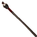

Открыть в интерактивной вики →
| Требуемый уровень | 18 |
|---|---|
| Редкость | Психорар |
| Улучшения | звёзды, орбы, осколки |
| Тип | Волшебные палочки |
| Тип урона | Дробящий |
| Цена | 36 000 |
| Ремонт | 14.4к |
| Заряды | 3000 |
| Вместимость дрифов | 4 |
| Требуемая мощь | 20 |
| Урон | 71 |
| Мощь | 8 |
| Знание | 6 |
| Мана | 40 |